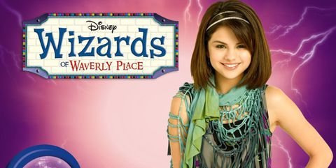
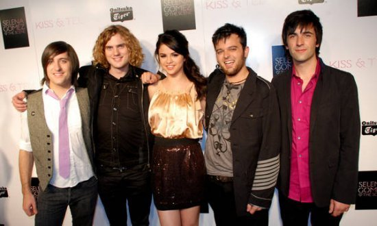
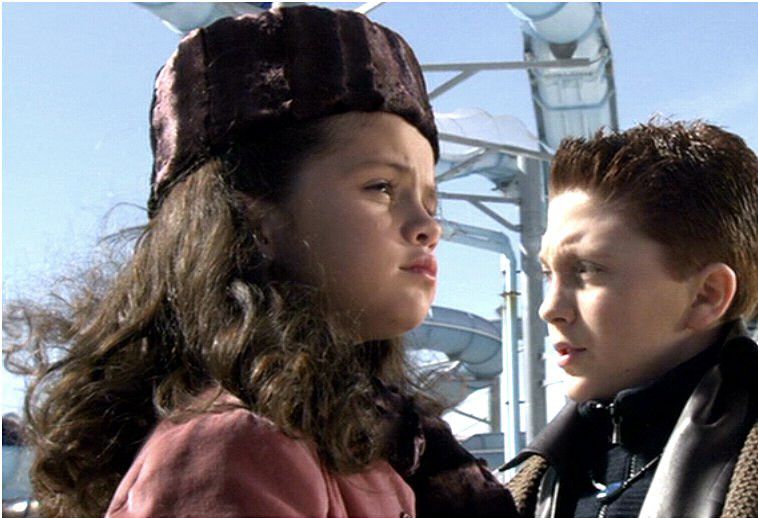
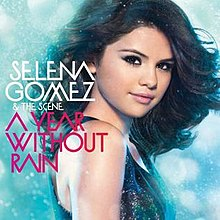
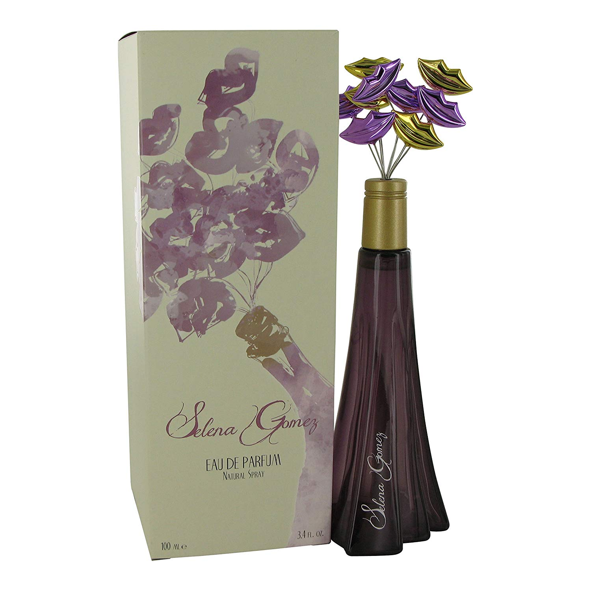
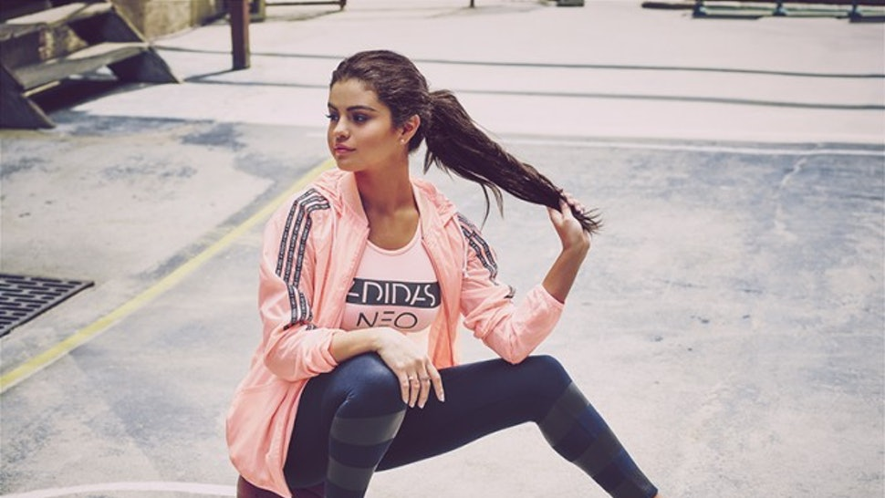

Basic Information
- Birthday:July 22, 1992
- Birthplace:Grand Prarie, Texas
- Age:26 years old
- Birth Sign:Cancer
- Height:1.65m
- Parents:Mandy Teefey, Ricardo Joel Gomez
Summary
Selena Gomez, who was born on July 22, 1992 as Selena Marie Gomez is an American singer, actress and producer. Selena has an amazing career and it only continues to grow. She first received popularity, after appearing on the children's television series Barney and Friends . Although she got her big break when she played Alex Russo in the hit Disney television series, Wizards of Waverly Place.
Above is a picture of Selena Gomez in her role as Alex Russo in the hit Disney television series, Wizards of Waverly Place.
Selena wasn't always a solo artist, in fact she started her music career with her former band Selena Gomez and the Scene. With her former band Selena Gomez & the Scene, she attained the top-ten albums Kiss & Tell (2009), A Year Without Rain (2010), and When the Sun Goes Down (2011) on the US Billboard 200. As a solo artist, Selena has released two number-one albums which included Stars Dance (2013) and Revival (2015). Not only that, she has earned seven top-ten entries on the Us Billboard Hot 100. Billboard has reported that she had sold over 7 million albums and 22 million singles worldwide.
Above is a picture of Selena Gomez with her band Selena Gomez and the Scene, from left to right is Joey Clement, Drew Taubenfield, Selena Gomez, Greg Garman, Dane Forrest.
Selena Gomez has also earned numerous awards throughout her career, including an ALMA Award, an MTV Video Music Award and a People's Choice Award. Outside of entertainment, she released her own clothing line through Kmart in 2010 and released a self-titled fragance. In 2017, she also released a limited-edition collection of handbags named "Selena Grace"that she designed in collaboration with Coach.Inc. She has worked with many charities and became a UNICEF ambassador at age 17.
Before Fame
She grew up observing her mother rehearsing for theater productions. Before Wizards of Waverly Place, she played minor roles in Spy Kids 3, Walker, and Texas Ranger: Trial by Fire.
Above is a picture of Selena Gomez in her role as Waterpark Girl in Spy Kids 3.
Artistry
Selena Gomez is described as a pop singer, showcasing the genre in the form of dance-pop and also incorporating electronic dance music into her sound. Selena has been experimenting with different music genres as her career progresses. While her debut album with The Scene was inspired in electronic rock and pop rock, her following records with the band opted for dance-pop sound. A Year Without Rain noted synth-pop characteristics and When the Sun Goes Down went into a more electropop and electro-disco-influenced musical direction. Her debut solo record Stars Dance was rooted in the EDM-pop genre, and Gomez herself described it as "baby dubstep",featuring elements from multiple genres as electronic, disco, techno or dancehall. Her songs "The Heart Wants What It Wants" and "Good for You" have been described as "minimalistic" and "grown-up", transitioning her sound into adult pop.
Above is the cover of Selena Gomez's album, A Year Without Rain.
Influences
Early in her music career, Selena Gomez cited Bruno Mars as an influence, for "his style of music, his style in general, the way he performs, the way he carries himself."Selena also cited Britney Spears, Christina Aguilera, Beyoncé and Rihanna as influences. Selena has also stated that she finds English singer Cheryl Cole as a significant influence to her artistry, "She made me feel better, I just love her music and I think she's a really nice person. She's been through a lot, but she carries herself with a lot of class and I love that."Selena' debut solo album Stars Dance (2013) was mainly influenced by Spears, singer-songwriter Taylor Swift, and American electronic producer Skrillex. Her second album, Revival (2015), was prominently influenced by Christina Aguilera and singer Janet Jackson.
Endorsements
Over the years, Selena has had many endorsements. In 2009, Selena was a part of Sears back-to-school fashion campaign and was featured in their television commercials. She also hosted the Sears Arrive Air Band Casting Call to select five winners for the first ever Sears Air Band to perform a the 2009 MTV Video Music Awards . Not only that, she became the spokesperson for Borden Milk and was also featured in their campaign's print advertisements and television commercials.
For 2010-2014, Selena released her own clothing line, named Dream Out Loud by Selena Gomez , through the retailer Kmart . In 2012, she released a self-titled fragrance, Selena Gomez by Selena Gomez. Also in 2012, she partnered with the cellphone brand, Case-Mate in their "Right Case, Right Occasion"marketing campaign. In 2013, she released another fragrance, named Vivamore by Selena Gomez . Also in 2013, she created her own nail polish colours for OPI .
Above is a picture of Selena Gomez's self-title fragance.
From 2013-2015, she was a partner and spokesperson for Neo by adidas . In 2015, Selena signed a $3 million endorsement deal with Pantene .
Above is a picture of Selena Gomez wearing a shirt from neo by adidas.
In 2016, she appeared in a fashion campaign for Louis Vuitton . She also appeared in advertisements for Coca-Cola's "Share a Coke"campaign.
In 2017, Selena partnered with Coach.Inc., and produced a collection of limited-edition handbags called the "Selena Grace" . Also in 2017, she partnered with the athletic brand Puma , as a brand ambassador.
Awards and Nominations
Selena has received many awards and nominations and couldn't be fit onto this page, so check out Madura's other page !
Check out Selena's official website to learn more about her!
References
- 8 Roles You Forgot Selena Gomez Played as a Kid. (2015, January 17). Retrieved June 7, 2019, from https://www.j-14.com/posts/8-roles-you-forgot-selena-gomez-played-as-a-kid-49519/
- A Year Without Rain. (2019, May 20). Retrieved June 8, 2019, from https://en.wikipedia.org/wiki/A_Year_Without_Rain
- Bennett, W. (2018, April 12). Selena Gomez Has Her "Wizards of Waverly Place" Wand Framed and We're Not Crying, You're Crying. Retrieved June 5, 2019, from https://www.seventeen.com/celebrity/a10375697/selena-gomez-has-her-wizards-of-waverly-place-wand-framed/
- Guerra, J. (2019, May 07). Selena Gomez's Adidas Neo Fall Collection Is Here. Retrieved June 8, 2019, from https://www.bustle.com/articles/99356-the-selena-gomez-adidas-neo-fall-collection-is-here-and-were-thinking-its-her-best-clothing
- Learn about Selena Gomez. (n.d.). Retrieved June 4, 2019, from https://www.famousbirthdays.com/people/selena-gomez.html
- Selena Gomez. (n.d.). Retrieved June 4, 2019, from https://www.selenagomez.com/
- Selena Gomez. (2019, June 5). Retrieved from https://www.ducksters.com/biography/selena_gomez.php
- Selena Gomez. (2019, June 5). Retrieved from https://www.biography.com/musician/selena-gomez
- Selena Gomez & The Scene Rock The Release Party | selena gomez release party 03 - Photo. (n.d.). Retrieved June 7, 2019, from http://www.justjaredjr.com/photo-gallery/305911/selena-gomez-release-party-03/
- Selena Gomez Eau De Parfum Spray, 3.4 Ounce. (n.d.). Retrieved June 8, 2019, from https://www.amazon.com/Selena-Gomez-Parfum-Spray-Ounce/dp/B0083ZLXFU